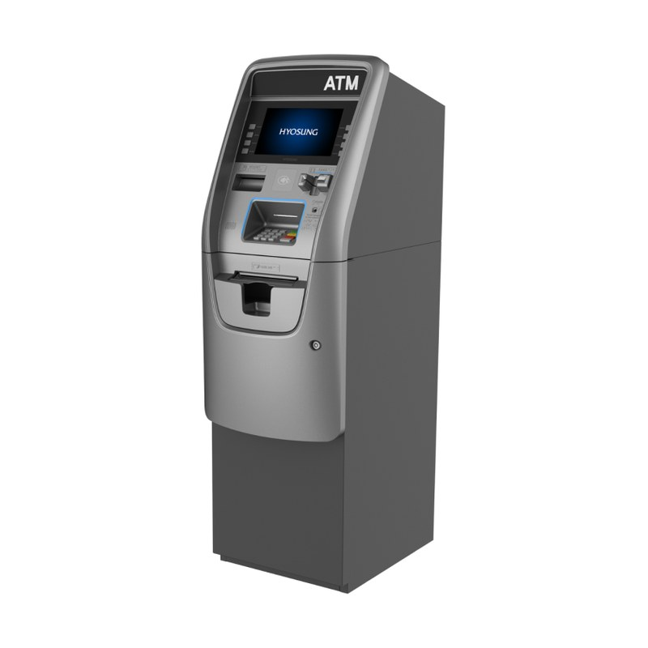
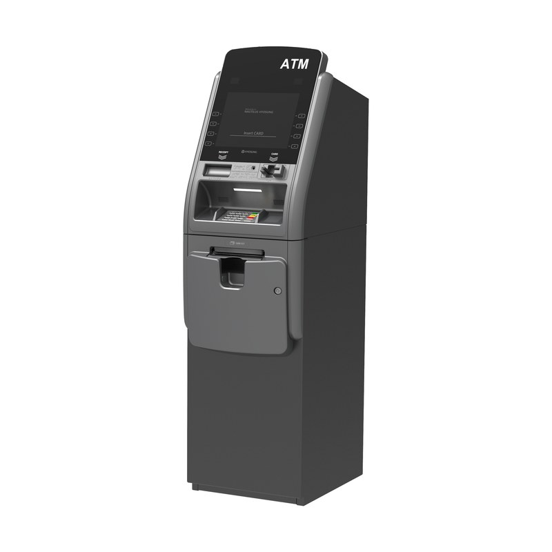
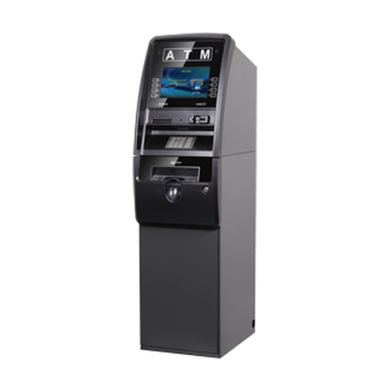

Reach out for current pricing
Includes free processing, free shipping & handling (within the lower 48 states), real-time online stats, 2-year manufacturer's warranty, and 100% of the surcharge revenue.
Product description
Based on customer feedback, the 2800T now comes standard with an adjustable throat servicing walls up to 10 inches. It showcases an elegant user interface on a brilliant 12.1-inch color display with capacitive-touch function keys, and the integrated topper's brightness control lets it fit any environment, from bright C-stores to dark nightclubs.
Serviceability
Vault lighting for cash loading and maximum installation versatility.
Security
Optional camera photographs users during transactions and can display an on-screen awareness notification.
Connectivity
Wireless mounting bracket and two additional power outlets: one for your wireless modem and another for any other device.
Specifications
- Platform
- Microsoft Windows CE 6.0
- Display
- 12.1" customer screen (800×480); 8" operator panel
- Card reader
- EMV DIP type, magnetic stripe compatible
- Cash dispenser
- 2,000-note removable cassette, upgradable to three
- Printer
- 80 mm thermal receipt
- Dimensions
- 72.0"H × 15.7"W × 26.3–33.3"D
- Weight
- 330.7 lbs
- Languages
- English, Spanish, French, Japanese, Chinese, Korean
Other equipment

Nautilus HyosungHalo II
Sleek retail ATM with a 10.1" screen, customizable LED keypad lighting, and Hyosung's industry-leading reliability.
Reach out for current pricingView details →
Nautilus HyosungMX 2800SE (Force)
12.1" capacitive-touch display, dimmable topper, and up to 6,000-note capacity for high-volume locations.
Reach out for current pricingView details → Genmega
GenmegaG2500
The workhorse retail ATM: configurable hardware, 8" screen (10.2" touch optional), and dispensers up to 4×2,000 notes.
Reach out for current pricingView details →
GenmegaOnyx
Modern, upscale design with a 10.2" wide display, lighted function keys, and a reflective front bezel.
Reach out for current pricingView details →Interested in the MX 2800T?
Tell us about your location and we'll quote the exact configuration, delivery, and setup.